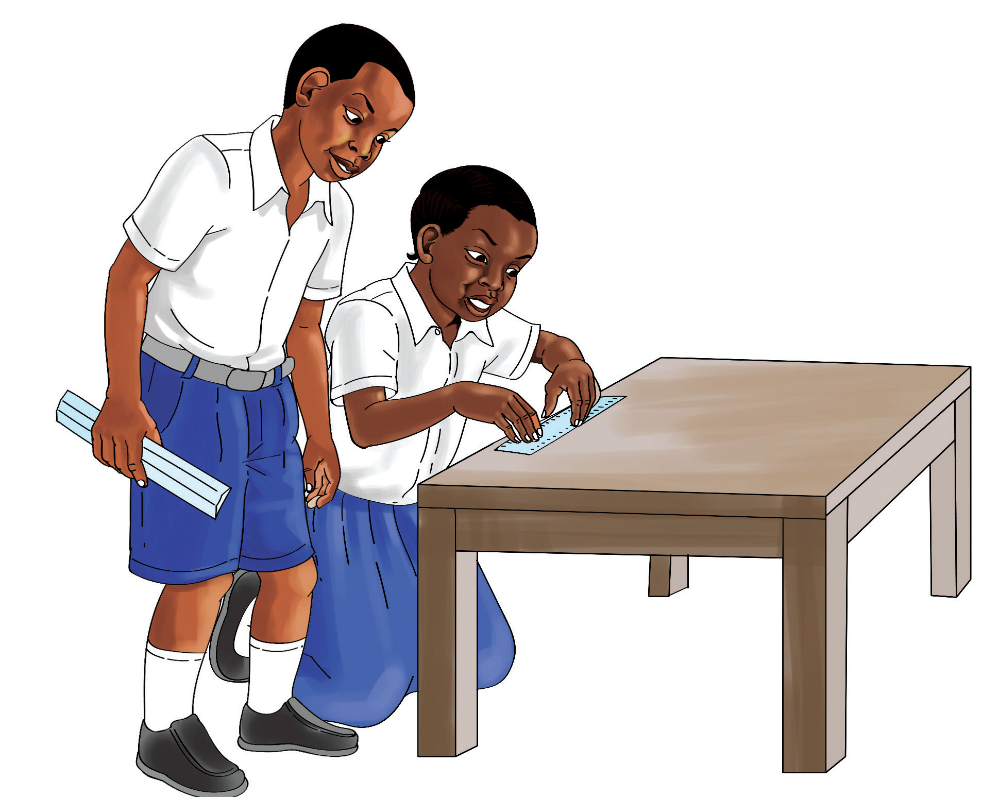

Utaona kuwa uzito wa mahindi na unga kwa kutumia makopo haulingani. Hii inaonesha makopo ni vifaa visivyo rasmi vya kupimia uzito.
Vipimo rasmi
Ni vipimo vilivyokubalika katika jamii na havitofautiani mahali popote vinapotumika.
Chunguza Kielelezo namba 2, kisha jibu maswali yanayofuata.

Kielelezo namba 2: Kupima urefu kwa kutumia kipimo rasmi
Ukipima urefu wa meza kwa kutumia rula utapata majibu yaliyo sawa. Rula ni kifaa kinachotumia vipimo rasmi. Kipimo rasmi ni kile kinachotoa majibu yanayofanana. Kizio kinachotumika kupima urefu ni meta (m).